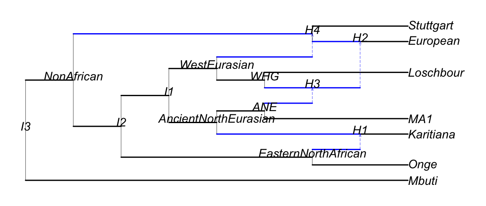

Getting started
This version of the package is a proof of concept, and not all methods have been fully implemented.
A minimal API is still incomplete, and so we demonstrate the package's various capabilities as pipelines involving multiple internal functions. A complete API that wraps these pipelines will be made available later.
In what follows, we use simulated trait data. In most of this manual, we use as an example the network topology from Lazaridis et al. (2014), Figure 3 [1], displayed below, with branch lengths arbitrarily set to 1 and inheritance probabilities (admixture proportions) set arbibitrarily to 0.4 and 0.6 at each hybrid node.

Exact likelihood for fixed parameters
1. Read in the network and the tip data
julia> using PhyloGaussianBeliefProp
julia> const PGBP = PhyloGaussianBeliefProp;
julia> using PhyloNetworks # `readnewick`, `tiplabels`, `preorder!`
julia> using DataFrames # `DataFrame`
julia> net = readnewick(pkgdir(PGBP, "test/example_networks", "lazaridis_2014.phy"))
PhyloNetworks.HybridNetwork, Rooted Network
23 edges
20 nodes: 7 tips, 4 hybrid nodes, 9 internal tree nodes.
tip labels: Mbuti, Onge, Karitiana, MA1, ...
(Mbuti:1.0,(((Onge:1.0,#H1:0.01::0.4)EasternNorthAfrican:1.0,(((Karitiana:1.0)#H1:0.01::0.6,(MA1:1.0,#H3:0.01::0.4)ANE:1.0)AncientNorthEurasian:1.0,(((#H2:0.01::0.4)#H3:0.01::0.6,Loschbour:1.0)WHG:1.0,#H4:0.01::0.4)WestEurasian:1.0)I1:1.0)I2:1.0,((European:1.0)#H2:0.01::0.6,Stuttgart:1.0)#H4:0.01::0.6)NonAfrican:1.0)I3;
julia> preorder!(net) # updates net.vec_node to contain network nodes listed in preorderThe following data were originally simulated along the network from a univariate Brownian motion process with mean 0 and variance rate 1 (see Continuous trait simulation)
julia> df = DataFrame(taxon=tiplabels(net),
x=[1.343, 0.841, -0.623, -1.483, 0.456, -0.081, 1.311])
7×2 DataFrame
Row │ taxon x
│ String Float64
─────┼────────────────────
1 │ Mbuti 1.343
2 │ Onge 0.841
3 │ Karitiana -0.623
4 │ MA1 -1.483
5 │ Loschbour 0.456
6 │ European -0.081
7 │ Stuttgart 1.311In this example, the trait x is univariate. We have mapped the observed data to the corresponding species in the dataframe df.
The call to preorder! updates net to contain a list of its nodes arranged in preorder (or topological ordering). Many internals in the package assume that this information is available, and so it is important that this be called immediately after reading in the network!
2. Choose an evolutionary model
At the moment, models available are: UnivariateBrownianMotion, UnivariateOrnsteinUhlenbeck, MvDiagBrownianMotion, MvFullBrownianMotion.
Note however that not all methods may be implemented across all models. See section Evolutionary models for more details on the available models.
julia> m = PGBP.UnivariateBrownianMotion(1, 0) # σ2 = 1.0, μ = 0.0
Univariate Brownian motion
- evolutionary variance rate σ2 :
1.0
- root mean μ :
0.0We specify a univariate Brownian motion with mean $\mu=0$ and variance rate $\sigma^2=1$. We want to compute the likelihood for these particular values, though other values may better fit the data.
3. Build a cluster graph from the network
Methods available are: Bethe, LTRIP, JoinGraphStructuring, Cliquetree.
We first choose Cliquetree to compute the likelihood exactly. Other methods may return a loopy cluster graph, which gives an approximate likelihood. See section Cluster graphs for more background on cluster graphs.
julia> ct = PGBP.clustergraph!(net, PGBP.Cliquetree())
Meta graph based on a Graphs.SimpleGraphs.SimpleGraph{Int8} with vertex labels of type Symbol, vertex metadata of type Tuple{Vector{Symbol}, Vector{Int8}}, edge metadata of type Vector{Int8}, graph metadata given by :cliquetree, and default weight 0
julia> PGBP.labels(ct) |> collect # cluster labels
17-element Vector{Symbol}:
:H1EasternNorthAfricanAncientNorthEurasian
:EasternNorthAfricanAncientNorthEurasianI2
:OngeEasternNorthAfrican
:StuttgartH4
:MbutiI3
:H2H3H4
:H3ANEWHGH4
:ANEWHGH4WestEurasian
:LoschbourWHG
:KaritianaH1
:EuropeanH2
:AncientNorthEurasianWestEurasianI1NonAfrican
:ANEH4WestEurasianNonAfrican
:ANEAncientNorthEurasianWestEurasianNonAfrican
:AncientNorthEurasianI1I2NonAfrican
:NonAfricanI3
:MA1ANESee that each cluster's label is derived by concatenating the labels of the nodes it contains.
4. Initialize cluster graph beliefs
ct describes the topology of our cluster graph, but does not track the beliefs for each cluster. Next, we:
- allocate memory for these beliefs
- initialize their values using the evolutionary model
- wrap them within another data structure to facilitate message passing.
julia> using Tables # to use `columntable`
julia> tbl_x = columntable(select(df, :x)) # extract x from df as a column table
(x = [1.343, 0.841, -0.623, -1.483, 0.456, -0.081, 1.311],)Next, we allocate memory for beliefs
julia> b, (n2c, n2fam, n2fix, n2d, c2n) = PGBP.allocatebeliefs(
tbl_x, df.taxon, net.vec_node, ct, m);
julia> length(b) # no. of beliefs
33We can take a peek at the first belief, before factor assignment. This belief is for cluster {H1, EasternNorthAfrican, AncientNorthEurasian}, based on earlier output.
julia> b[1] # first belief. 0s before any factor assignment
canonical belief for Cluster H1EasternNorthAfricanAncientNorthEurasian, 1 traits × 3 nodes, dimension 3.
Node labels: Int8[17, 16, 10]
trait × node matrix of non-degenerate beliefs:
Bool[1 1 1]
exponential quadratic belief, parametrized by
μ: [0.0, 0.0, 0.0]
h: [0.0, 0.0, 0.0]
J: [0.0 0.0 0.0; 0.0 0.0 0.0; 0.0 0.0 0.0]
g: 0.0Next we assign each factor (conditional distribution of a node given its parents) to a belief that has both the node and all of its parents. These factors depend on the chosen evolutionary model.
julia> PGBP.assignfactors!(b, m, tbl_x, df.taxon, net.vec_node,n2c,n2fam,n2fix);
julia> b[1] # after factor assignment: non-zero belief
canonical belief for Cluster H1EasternNorthAfricanAncientNorthEurasian, 1 traits × 3 nodes, dimension 3.
Node labels: Int8[17, 16, 10]
trait × node matrix of non-degenerate beliefs:
Bool[1 1 1]
exponential quadratic belief, parametrized by
μ: [0.0, 0.0, 0.0]
h: [0.0, 0.0, 0.0]
J: [192.30769230769232 -76.92307692307693 -115.38461538461539; -76.92307692307693 30.769230769230774 46.15384615384616; -115.38461538461539 46.15384615384616 69.23076923076923]
g: 1.7106097934927051Finally, we wrap the beliefs and other objects into a ClusterGraphBelief to facilitate message passing later.
julia> ctb = PGBP.ClusterGraphBelief(b, n2c, n2fam, n2fix, c2n);
julia> PGBP.nclusters(ctb) # no. of cluster beliefs
17
julia> PGBP.nsepsets(ctb) # no. of edge/sepset beliefs
16b is a vector of all beliefs, one for each cluster and edge (also known as sepset) in the cluster graph. The edge beliefs store the most recent messages passed between neighboring clusters.
Recall that each cluster or edge is associated with a set of nodes. The scope $x$ of its belief comes from stacking the trait vectors for these nodes. A belief with scope $x$ is parametrized by $(\bm{J},h,g)$ as follows:
\[\exp(-x^{\top}\bm{J}x/2 + h^{\top}x + g)\]
We show belief b[1] before and after factor (i.e. conditional distribution) assignment. Note that its J and g parameters are changed.
ctb contains b with added information to locate specific beliefs in b from their corresponding cluster/edge labels in ct, and added storage to log information during message passing.
5. Propose a schedule from the cluster graph
A message schedule can be described by a sequence of cluster pairs. Each pairing tells us to send a message between these clusters (which must be neighbors), while the order within the pair indicates the sender and the recipient.
We build a message schedule sched from ct by finding a minimal set of spanning trees for the cluster graph that together cover all its edges (i.e. neighbor cluster pairs). Each spanning tree is represented as a sequence of edges following some preorder traversal of ct. See section Message schedules for more details on message schedules.
Since ct is a clique tree, there is a single spanning tree (sched[1]). We extract and display the preorder sequence of edges from sched[1]. In this example, NonAfricanI3 is the root cluster of ct, and KaritianaH1 is a leaf cluster.
julia> sched = PGBP.spanningtrees_clusterlist(ct, net.vec_node);
julia> DataFrame(parent=sched[1][1], child=sched[1][2]) # edges of tree 1 in preorder
16×2 DataFrame
Row │ parent child
│ Symbol Symbol
─────┼──────────────────────────────────────────────────────────────────────
1 │ NonAfricanI3 AncientNorthEurasianWestEurasian…
2 │ AncientNorthEurasianWestEurasian… ANEAncientNorthEurasianWestEuras…
3 │ ANEAncientNorthEurasianWestEuras… ANEH4WestEurasianNonAfrican
4 │ ANEH4WestEurasianNonAfrican ANEWHGH4WestEurasian
5 │ ANEWHGH4WestEurasian H3ANEWHGH4
6 │ H3ANEWHGH4 LoschbourWHG
7 │ H3ANEWHGH4 MA1ANE
8 │ NonAfricanI3 MbutiI3
9 │ H3ANEWHGH4 H2H3H4
10 │ H2H3H4 EuropeanH2
11 │ H2H3H4 StuttgartH4
12 │ AncientNorthEurasianWestEurasian… AncientNorthEurasianI1I2NonAfric…
13 │ AncientNorthEurasianI1I2NonAfric… EasternNorthAfricanAncientNorthE…
14 │ EasternNorthAfricanAncientNorthE… H1EasternNorthAfricanAncientNort…
15 │ H1EasternNorthAfricanAncientNort… OngeEasternNorthAfrican
16 │ H1EasternNorthAfricanAncientNort… KaritianaH16. Calibrate beliefs with the schedule
We apply one iteration of belief propagation on ctb following the schedule sched. Since ct is a clique tree, the resulting beliefs are guaranteed to be calibrated (i.e. the beliefs of neighbor clusters agree marginally over the sepset between them).
julia> PGBP.calibrate!(ctb, sched);7. Extract the log-likelihood
On a calibrated clique tree, there are two ways to obtain the log-likelihood:
- integrate any belief over its scope to get its normalization constant (
norm) - compute the
factored_energy, which approximates the log-likelihood on loopy cluster graphs but is exact on a clique tree
julia> (_, norm) = PGBP.integratebelief!(b[1]); # norm = integral of b[1]
julia> norm
-11.273958980921247
julia> (_, _, fe) = PGBP.factored_energy(ctb); # fe = factored energy
julia> fe
-11.273958980921261The first approach is more efficient (it uses only one belief, rather than all beliefs), but only works for a clique tree. The normalization constant of a belief from a calibrated loopy cluster graph cannot be similarly interpreted.
We see that both approaches return the same value, modulo rounding error.
Exact inference
In the section above, we computed the log-likelihood for $\mu=0$, $\sigma^2=1$.
Now we find $\mu=\widehat{\mu}$ and $\sigma^2=\widehat{\sigma}^2$ that maximize the log-likelihood. There are two options:
- iterative optimization
- exact computation using belief propagation
julia> using Optim
julia> fitted, ll, _ = PGBP.calibrate_optimize_cliquetree!( # iterative
ctb, # beliefs
ct, # clique tree
net.vec_node, # network nodes in preorder
tbl_x, # trait data
df.taxon, # tip labels
PGBP.UnivariateBrownianMotion, # evolutionary model
(1.0, 0), # starting parameters: σ2 = 1.0, μ = 0.0
Optim.Options(iterations=30, show_trace=false)
);
julia> fitted # ML estimate of parameters
Univariate Brownian motion
- evolutionary variance rate σ2 :
0.31812948798414614
- root mean μ :
1.1525789703018783
julia> ll # log-likelihood at the ML estimate
-8.656529929205751
julia> fitted, _ = PGBP.calibrate_exact_cliquetree!( # exact optimization
ctb,
sched[1], # schedule the order to traverse edges (sepsets)
net.vec_node,
tbl_x,
df.taxon,
PGBP.UnivariateBrownianMotion);
julia> fitted # REML estimate for σ2, ML estimate for μ
Univariate Brownian motion
- evolutionary variance rate σ2 :
0.37115107002903924
- root mean μ :
1.1525789703844822Both options return the maximum-likelihood (ML) estimate for $\mu$, though the latter returns the restricted maximum-likelihood (REML) estimate for $\sigma^2$.
Strictly speaking, the estimates from the latter option do not jointly maximize the log-likelihood. However, the REML estimate for $\sigma^2$ is generally less biased than its ML counterpart. In this simple model, the REML estimate is just equal to the ML estimate up to a factor (n-1)/n, with n the number of tips in the network: sigma2_REML = (n-1)/n * sigma2_ML calculated below
julia> PGBP.varianceparam(fitted) * (net.numtaxa - 1) / net.numtaxa
0.31812948859631934Approximate inference
Suppose now that we use a loopy cluster graph instead of a clique tree. We choose Bethe to construct a Bethe cluster graph (also known as factor graph) fg.
As before, we set up a data structure fgb to track the beliefs of the factor graph during message passing. Then we call calibrate_optimize_clustergraph!, the analog of calibrate_optimize_cliquetree! from earlier:
julia> cg = PGBP.clustergraph!(net, PGBP.Bethe()) # factor graph
Meta graph based on a Graphs.SimpleGraphs.SimpleGraph{Int8} with vertex labels of type Symbol, vertex metadata of type Tuple{Vector{Symbol}, Vector{Int8}}, edge metadata of type Vector{Int8}, graph metadata given by :Bethe, and default weight 0
julia> b, (n2c, n2fam, n2fix, n2d, c2n) = PGBP.allocatebeliefs(
tbl_x, df.taxon, net.vec_node, cg, m); # allocate memory for beliefs
julia> cgb = PGBP.ClusterGraphBelief(b, n2c, n2fam, n2fix, c2n); # wrap beliefs
julia> fitted, fe, _ = PGBP.calibrate_optimize_clustergraph!(
cgb,
cg,
net.vec_node,
tbl_x,
df.taxon,
PGBP.UnivariateBrownianMotion,
(1.0, 0),
100, # max number of iterations within LBP
PGBP.regularizebeliefs_bycluster!, # regularization fct
Optim.Options(iterations=30, show_trace=false)
);
julia> fitted # parameter estimates
Univariate Brownian motion
- evolutionary variance rate σ2 :
0.3181295333369248
- root mean μ :
1.1525789121484613
julia> fe # factored energy approximation to the log-likelihood
-8.587925093657487We see that both parameter estimates are very close to their maximum-likelihood counterparts (within 10⁻⁴ percent), and the factored energy slightly overestimates the log-likelihood for these values (within 1 percent).